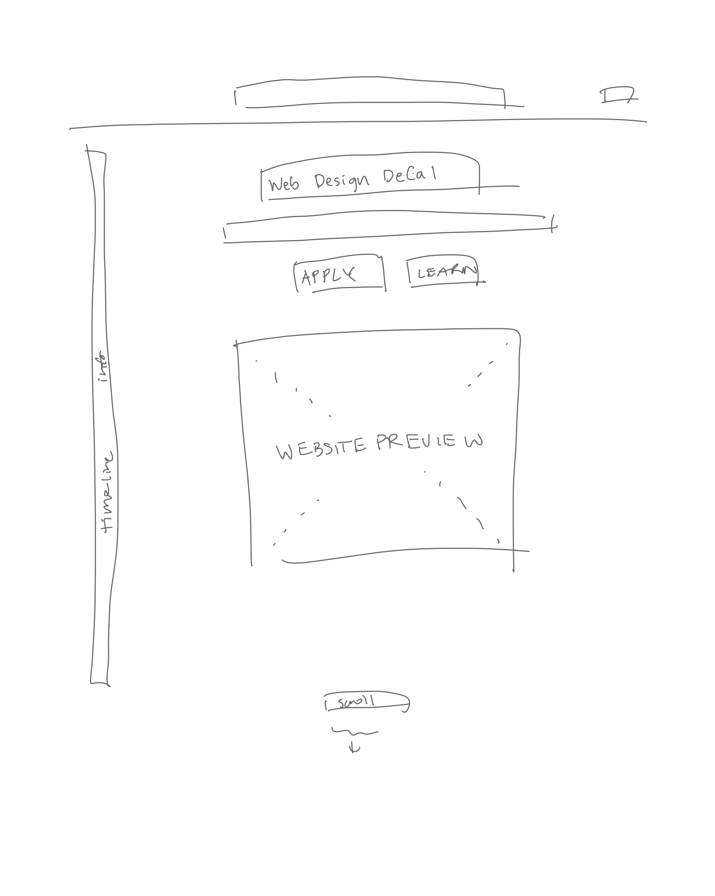
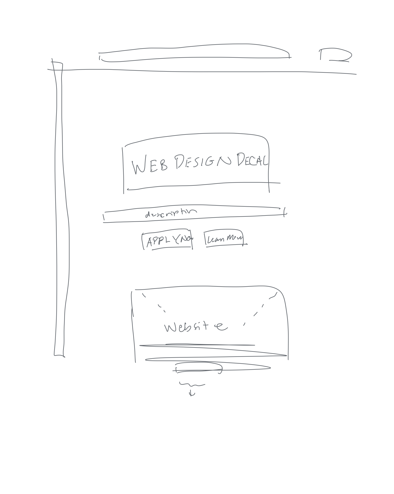

-
Using the favorite website you chose in homework 1, create a wireframe for one page of it using pen/paper, PowerPoint, or any your tool of choice. (use the 'img' tag!) Make sure to let us know what the name of your website is (Use the 'p' tag!)
Web Design Decal
 -
Try to improve the website you've chosen, and create a redesigned wireframe of one page for the same website using the principles of visual hierarchy that you learned from the article.
I chose a bad website

-
What is the goal of the website? Who is it intended for? How does the design accomplish this? Write 2-3 sentences answering these questions. (Use the 'p' tag again!)
The goal of this website is not only to provide information about the web design decal but to also showcase the skills that can be learned in this class and attract interest. This design allows people to know what course this is, and as a sample website page to show them their progress each week as they learn. It's interactive and fun which gets people to want to take this class to see how to create a website like this.
-
Write 2-3 sentences about what problems your redesign addressed, and how it solved them.
I think the website it beautiful as it is. For the sake of completing this assignment, I placed the class name more towards the center and made it bigger to center the attention on the name first to capture attention. I thought it would be cool to have the website mock image a little lower and incomplete/faded so people would feel more inclined to keep scrolling to see the finished product. This would have them scroll through the class information and other stuff down there which attracts their interest more to take this class.
NOTE: Make sure to include the wireframe images in the website and don't just put it in your assets folder!
Your wireframes should look something like this: